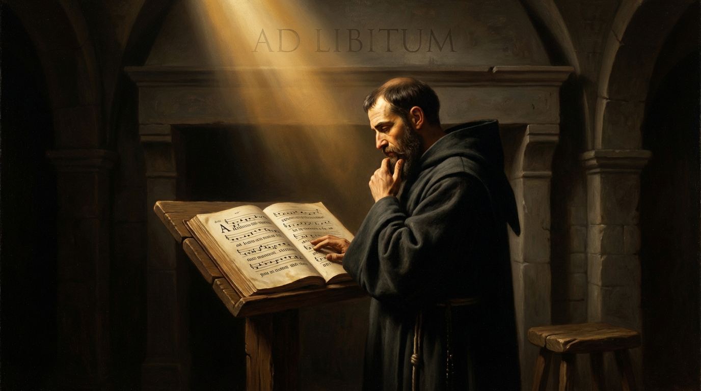
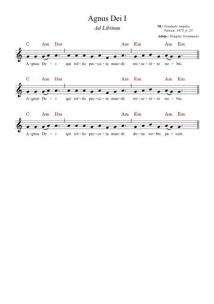

Música sacra · Ad libitum
Agnus Dei I — Graduale Simplex (Ad libitum)
Graduale Simplex · Ordinário da Missa

Ad libitum
YouTubeAgnus Dei I — Graduale Simplex (Ad libitum)
Ouça o canto e acompanhe a partitura.

Para o seu ministério de música
A partitura
Partitura gratuita; contribuição opcional.
Abrir PDF em nova aba- Repertório
- Ad libitum
- Versão
- Graduale Simplex · Ordinário da Missa
Partitura completa
Agnus Dei I — Graduale Simplex (Ad libitum)
Use os controles do PDF para ampliar e imprimir. No celular, abra em nova aba para uma leitura mais confortável.
Para rezar e cantar
Meditação sobre o canto
AGNUS DEI
Cordeiro de Deus: sacrifício, misericórdia e paz na liturgia e na fé cristã.
O Agnus Dei é uma das invocações mais profundas da liturgia católica. Situado no momento da fração do pão, ele resume a fé no mistério pascal de Cristo, o Cordeiro que tira o pecado do mundo. A expressão latina ecoa o anúncio de João Batista: “Eis o Cordeiro de Deus”. Na liturgia, essa proclamação torna-se presença e súplica.
O SIMBOLISMO BÍBLICO DO CORDEIRO
A figura do cordeiro atravessa toda a Escritura. No Êxodo, o cordeiro pascal protege Israel; São Paulo afirma que “Cristo, nosso cordeiro pascal, foi imolado” (1Cor 5,7). No Apocalipse, o Cordeiro imolado vive e reina, cercado de adoração. Ao cantar o Agnus, a Igreja participa dessa mesma liturgia celeste.
INTRODUÇÃO LITÚRGICA
O Agnus Dei entrou oficialmente na Missa romana sob São Sérgio I (687–701). O Liber Pontificalis registra o mandato de cantá-lo durante a fração do Corpo do Senhor. Essa inserção afirma a fé na presença redentora de Cristo e responde a controvérsias iconográficas da época, mantendo a linguagem bíblica do Cordeiro.
SIGNIFICADO DA FORMULAÇÃO
A invocação se compõe de três repetições: duas com “miserere nobis” e a última com “dona nobis pacem”. A tríplice súplica abraça todo o caminho espiritual: reconhecer a misericórdia necessária para o perdão e implorar a paz que só o Cordeiro pode dar. É tradição que molda a confiança cristã em Cristo Redentor.
O AGNUS DEI E A FRAÇÃO DO PÃO
Durante a fração, o sacerdote parte a hóstia consagrada; a assembleia canta o Agnus acompanhando esse gesto. A IGMR permite repetir a invocação até concluir o rito, encerrando com o pedido de paz. É um momento altamente simbólico: a comunidade proclama a presença real do Cordeiro sacrificado e vivo.
ESPIRITUALIDADE DO CORDEIRO
São João Crisóstomo ensina que contemplar o Cordeiro leva o fiel a reconhecer sua necessidade de misericórdia e paz. Santo Agostinho destaca a mansidão de Cristo que se entrega por nós. Os mestres espirituais medievais veem no Agnus uma escola de abertura à misericórdia: chamamos Cristo de Cordeiro para receber a vida nova que brota da Cruz e da Ressurreição.
A IMAGEM E AS VISÕES CELESTIAIS
Documentos antigos, como as Constituições Apostólicas, relacionam o Cordeiro litúrgico às visões do Apocalipse. O culto terrestre participa da liturgia celeste: no Sanctus, unimo-nos aos anjos; no Agnus, à adoração do Cordeiro imolado e exaltado.
SÍNTESE CONTEMPLATIVA
O Agnus Dei reúne em poucas palavras toda a fé no sacrifício redentor de Cristo. Ao cantar “Cordeiro de Deus, que tirais os pecados do mundo”, a Igreja renova sua confiança no sacrifício salvífico, recorda a universalidade da redenção e implora misericórdia e paz. Não é adorno litúrgico, mas porta para o coração da Eucaristia e eco dos cânticos celestes.
Permaneça na paz
O Agnus Dei nos faz acolher o Cordeiro e partilhar a paz que Ele oferece. Deixe que cada invocação desça ao fundo da alma e permita que o silêncio final prepare a assembleia para a comunhão plena.
Deseja revisitar o conjunto completo?
Apoie nossa missão
Escaneie para fazer um PIX

Ou copie a chave PIX: